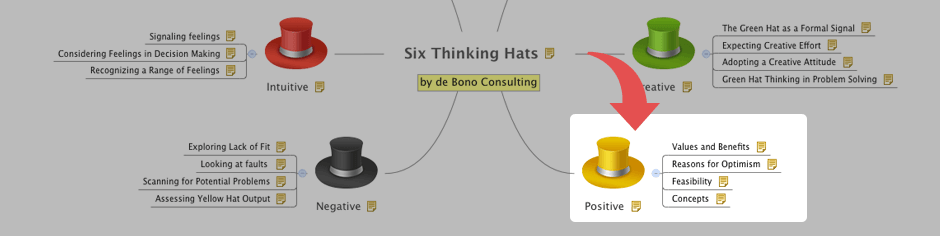
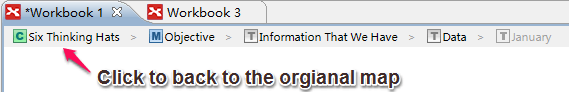

ドリル ダウンとドリル アップ
Only the selected topics and its subtopics will be displayed on a new mind map when it's drill down. BTY, drilldown enables you to focus on a specific branch of the mind map. And drill up can take you back to the original map.
ドリルダウンするには :- トピックを選択します。
- これらの方法のいずれかを使用してドリル ダウンします：
- キーボードで "F6" を押します。
- ルールバーのドリルダウンアイコンをクリックする。
- メニューから[表示]→[ドリルダウン]を選択します。
- 右クリックしてコンテキストメニューを開き、[ドリル ダウン]を選択します。
- 選択したトピックがドリル ダウンしたマップで中心トピックとして表示されます。
ドリルダウンマップ

- ドリルダウンしたマップの中心トピックにあるドリルアップのアイコン をクリックします。
- メニューの[表示]→[ドリルアップ]を選択する。
- ツールバーのドリルアップアイコンをクリックします。
- ショートカットキーを使用: Shift + F6 キー。
階層リンク
階層リンクは、ドリルダウンしてきた際に、ツールバーの下に、現在のマップの位置を表示するバーです。中心トピックの階層リンクをクリックすることで、全体マップに簡単に戻ることができます。

注: フローティング トピックにドリルダウンを追加すると、このトピックはドリル アップ後、表示されません。そのビューで示されていないことを思い出させるその分岐ルートトピック上のドリルダウンアイコンがあるでしょう。このボタンをクリックしてドリル ダウン後に、参照することができます。